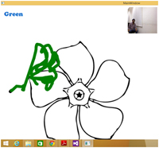
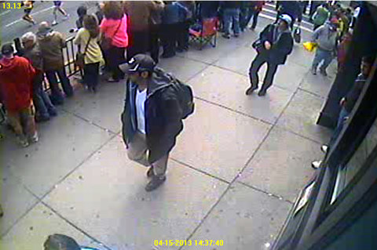

Jan 2016 - July 2016
Pollution Monitoring in India
Supervisor: B.Ashok, Ranjita Bhagwan at Microsoft Research India Lab
Studied and carried out experiments to collect PM2.5 data, calibrate and compare the accuracy of monitoring sensors, and derive interesting correlations and trends from the pollution data.

August 2015 - November 2015
Real time Robot Navigation through eye gestures
Supervisor: Prof Avinash Gautam, Prof Sudeept Mohan at Inspire Lab, BITS Pilani
Navigation of the mobile robot using eye gestures. Worked on face detection using Viola Jones algorithm, eye location estimation and pupil detection. Converted the analogous pupil location to discrete directional commands and interfaced epuck bot with the system

September 2015 - November 2015
Project Communicate
Supervisor: Prof Rahul Banerjee At WPN Lab, BITS Pilani
The broad aim of the project is to provide technology based assistive solutions for children suffering from Autism Spectrum Disorder (ASD), who live in Resource Constrained communities. I worked on the HCI based sub-project "Air Canvas". Air Canvas is a kinect application used to draw and paint on screen using hand gestures and voice. Applied computer vision techniques to implement object recognition and replaced the Kinect with a simple RGB camera.

August 2014 - November 2014
Human detection and localization in surveillance videos
Supervisor: Dr Dheeraj Sangwan, Dr JL Raheja at Machine Vision Lab, CEERI Pilani
Detection and location of human figures in surveillance video. Used Computer Vision techniques like background subtraction and contour detection to locate the blob. Work under progress to use deep learnt CNN model to detect humans inside the moving contour
January 2014 - March 2014
Wireless Railtrack Maintenance System
Inspection of tracks and fault detection using ultrasonic, piezoelectric and infrared sensors. This involved data aggregation, compression and transmission of data to cluster heads. The alert intensity was estimated using fuzzy logic. Won first prize in Project:Prototype, APOGEE 2014 (International Technical Fest Of BITS Pilani). Experiments were conducted on Indian railway tracks.
January 2015 - March 2015
Driver Alert System
Detection of closed eyes is used to alert the driver if the driver dozes off. Used OpenCV libraries.
Source code can be found here.